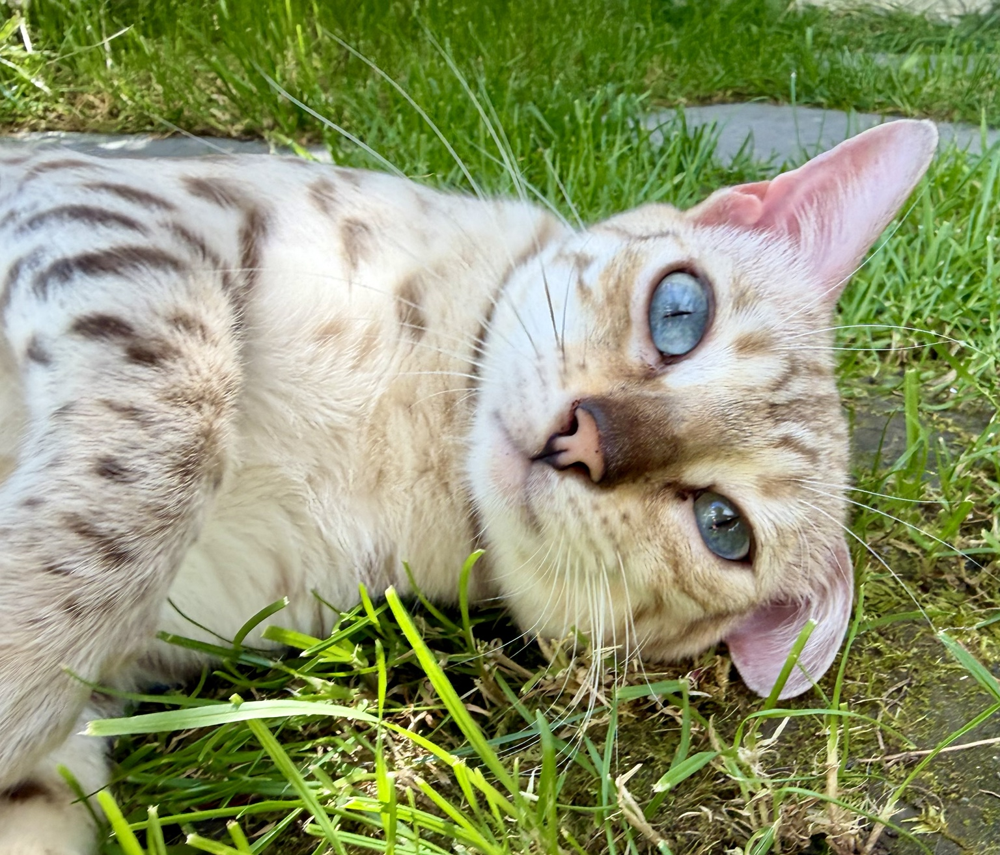
Nuna
Goldene Königin mit kräftigen Rosetten und ausdrucksstarkem Wildlook.
HCM normalPRA-b normalPK-Def normalLiebevoll aufgezogene Bengalkatzen mit faszinierender Wildkatzenoptik, starkem Charakter und verantwortungsvoller Zucht.
Mein Name ist Anne Leiler. In Altstätten im Kanton St. Gallen widme ich mich mit großer Leidenschaft der Bengalzucht.
Unsere Katzen leben familiennah, werden liebevoll begleitet und wachsen mit Alltagsgeräuschen, Menschenkontakt und viel Zuwendung auf. Schönheit allein genügt nicht: Charakter, Gesundheit und Vertrauen stehen bei uns im Mittelpunkt.
Als Mitglied im FFH / Ebocat legen wir Wert auf transparente Gesundheitsvorsorge und sorgfältig geplante Verpaarungen.
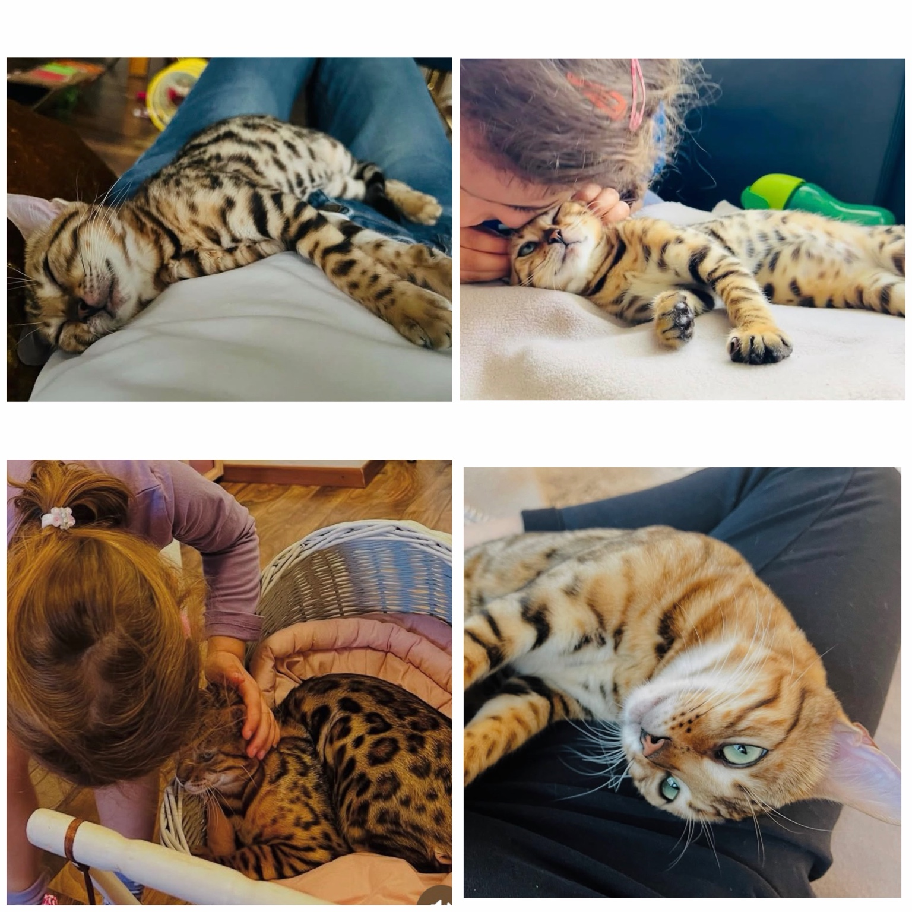

Goldene Königin mit kräftigen Rosetten und ausdrucksstarkem Wildlook.
HCM normalPRA-b normalPK-Def normal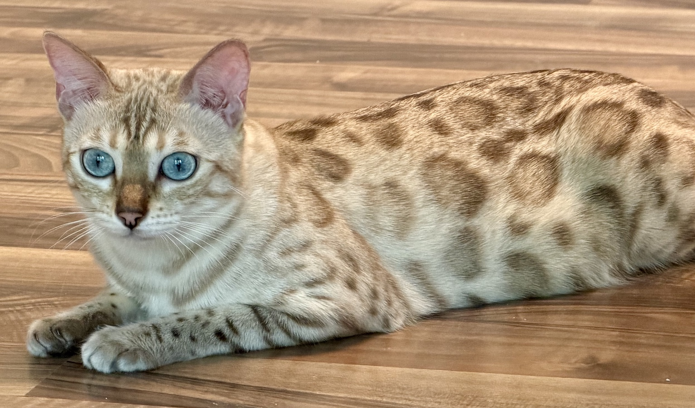
Snow-Bengalin mit eisblauen Augen und sanftem Wesen.
HCM normalPRA-b normalPK-Def normal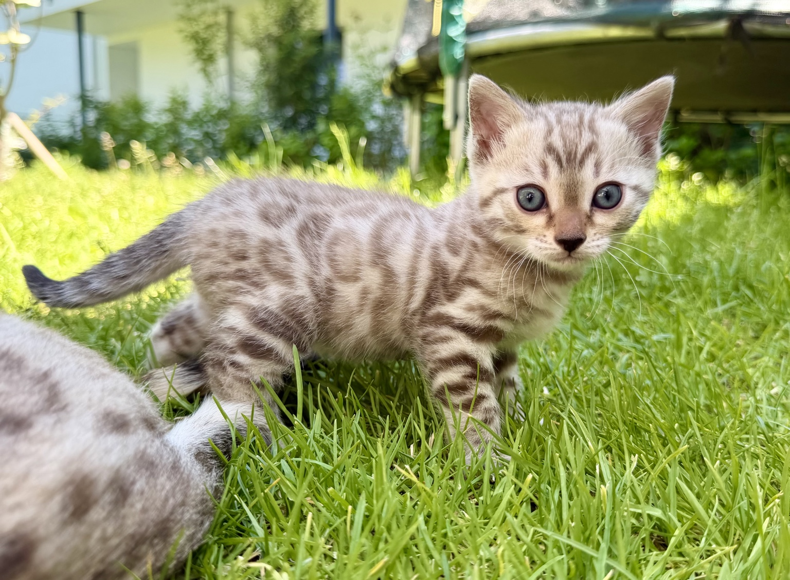
Helle junge Bengalin mit klarer Zeichnung und neugierigem Ausdruck.
Eltern negativ getestet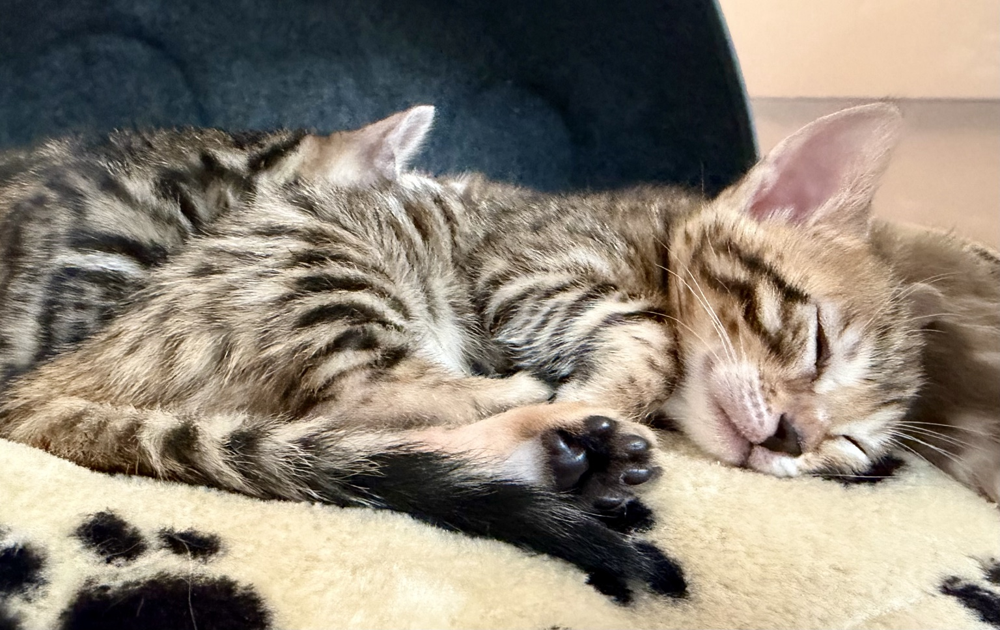
Kleine Leopardin mit dunklen Kontrasten und starkem Rosettenbild.
Eltern negativ getestet
Unsere Kitten werden mit Geduld, Nähe und Verantwortung aufgezogen. Sie lernen Menschen, Alltagsgeräusche, Spiel, Pflege und liebevolle Grenzen kennen.
Beim Auszug sind sie tierärztlich untersucht, altersgerecht geimpft, mehrfach entwurmt und bestens auf ihr neues Zuhause vorbereitet.
Mehr über unsere Kitten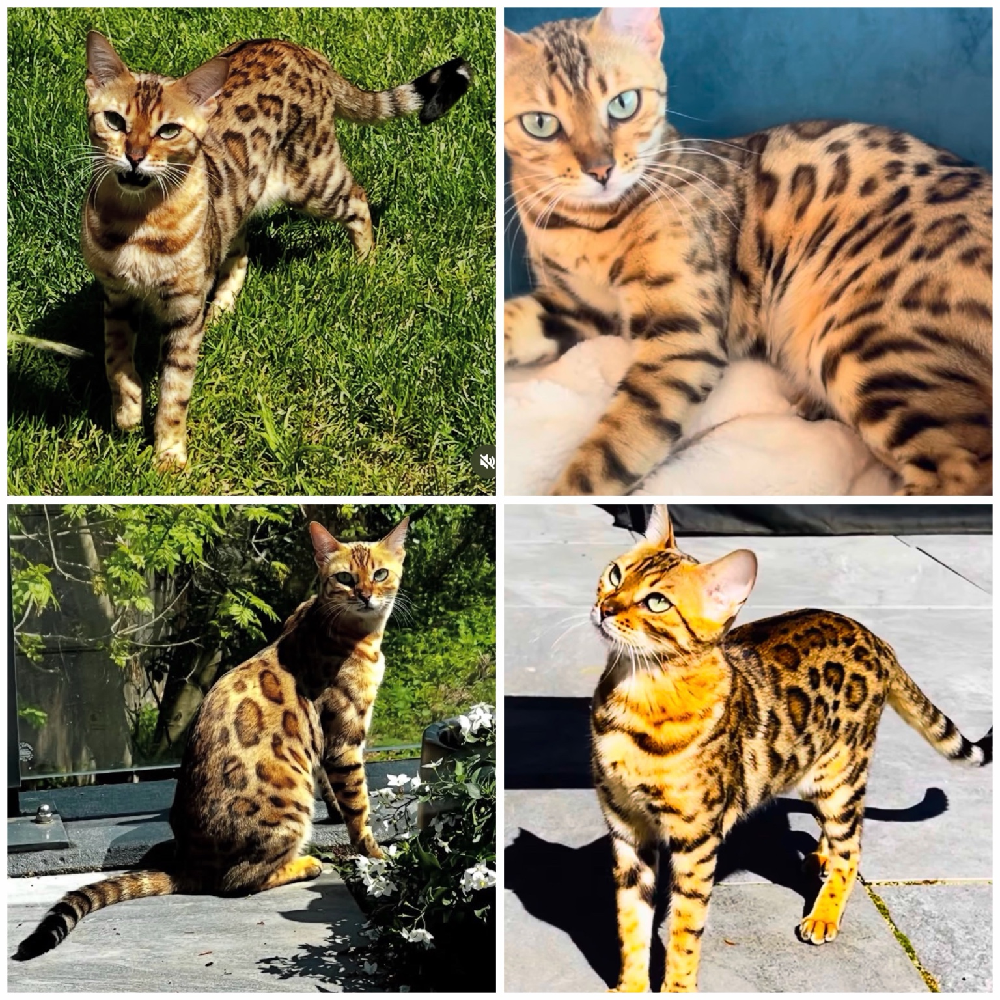
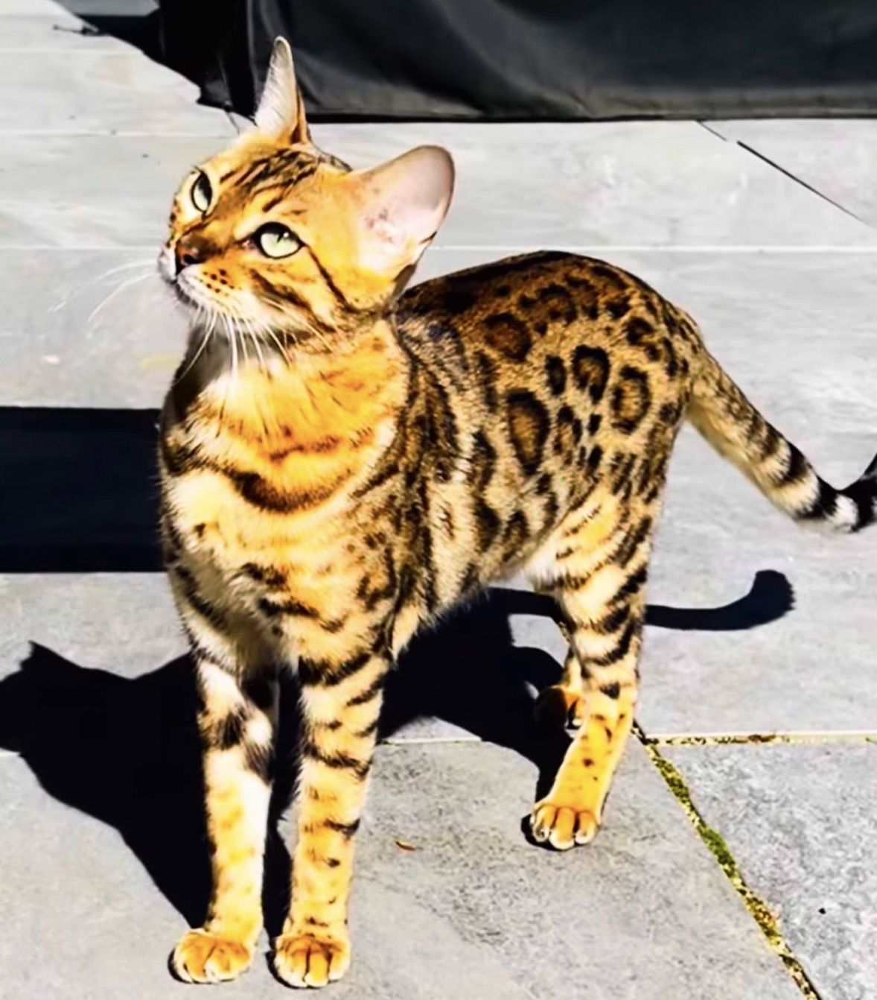
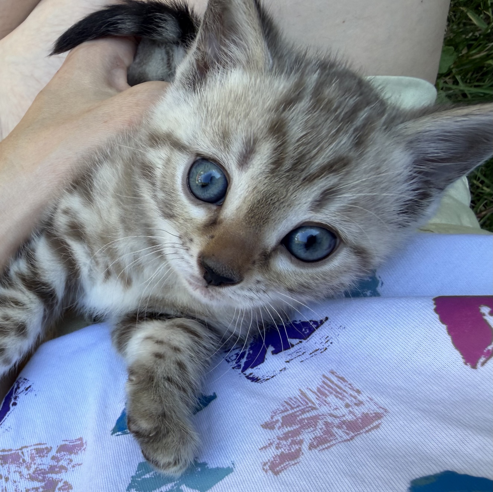
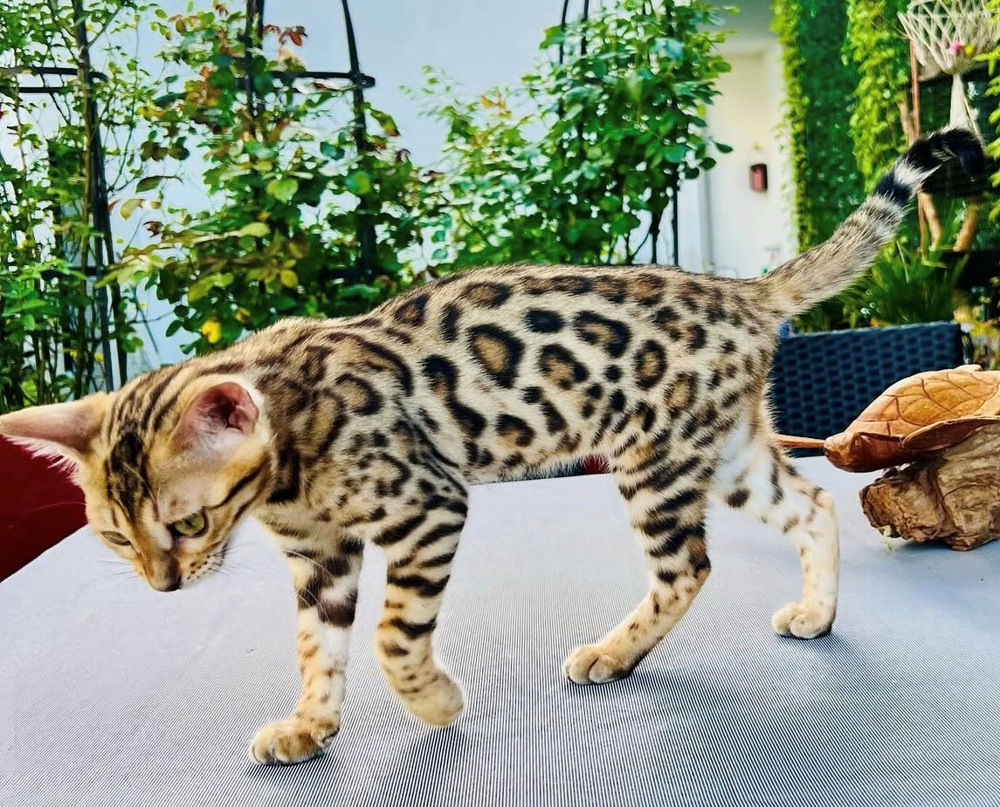
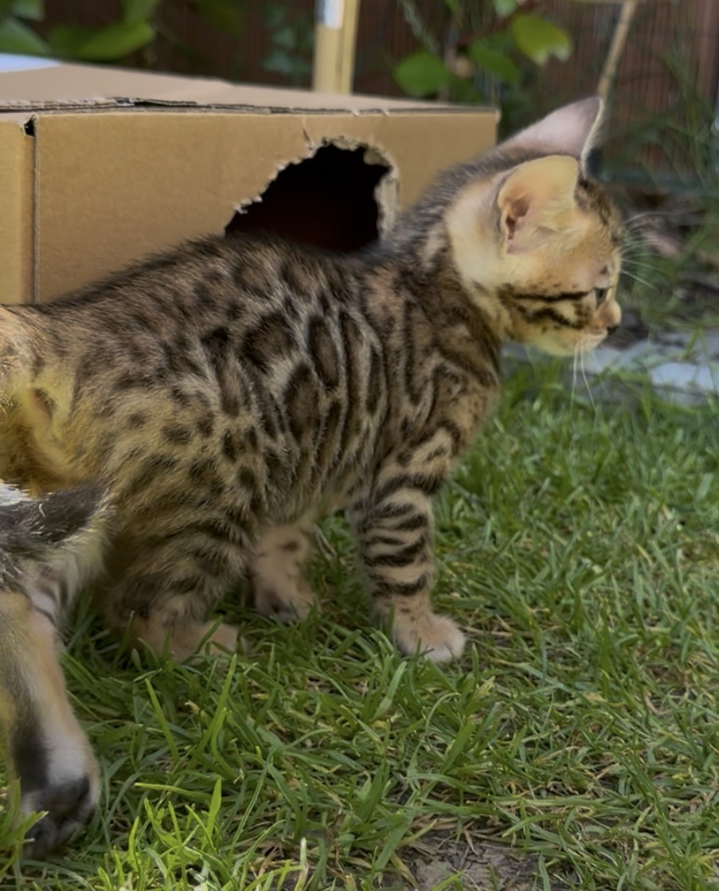
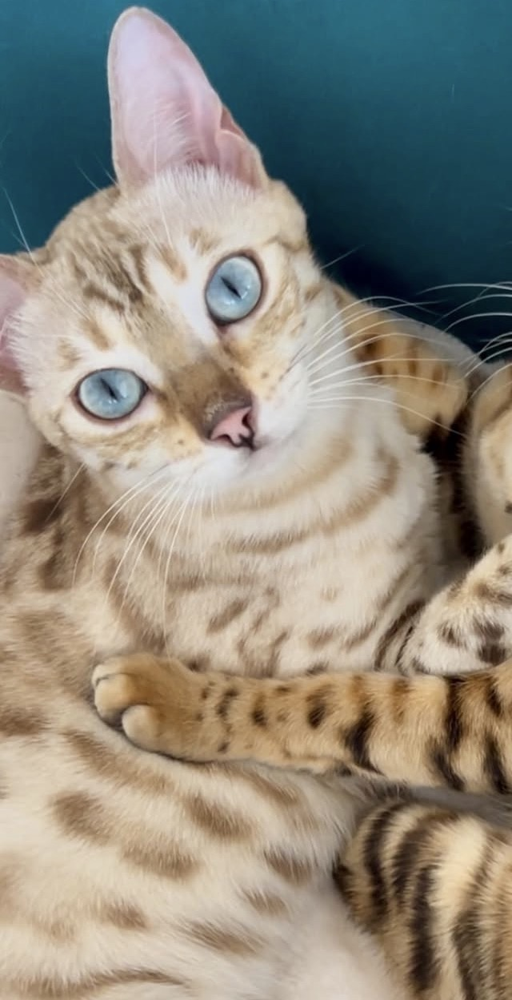
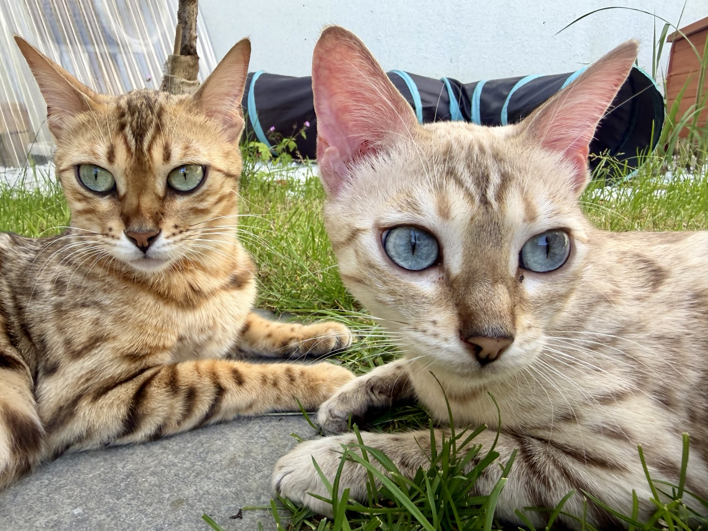
Bengalen vom Tal von Aru
Anne Leiler · 9450 Altstätten SG · Schweiz
E-Mail: ankr1210@gmail.com
Instagram: @bengalenaru